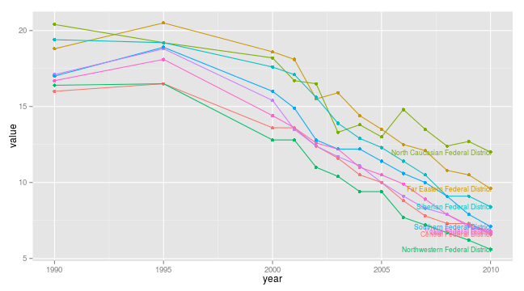
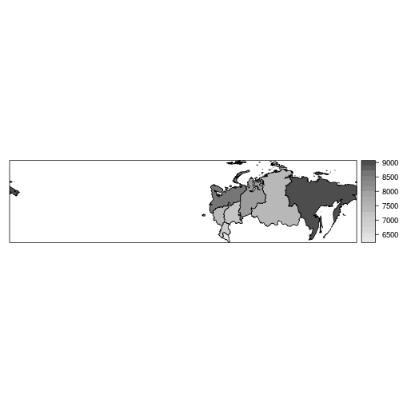
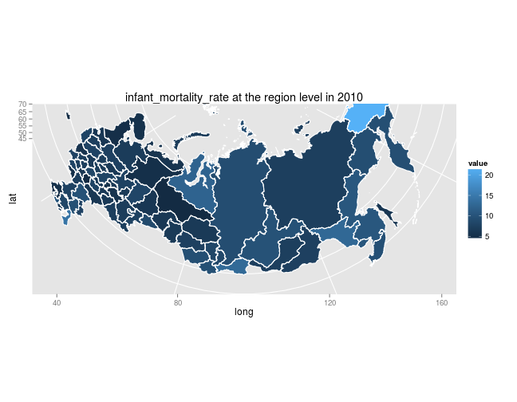
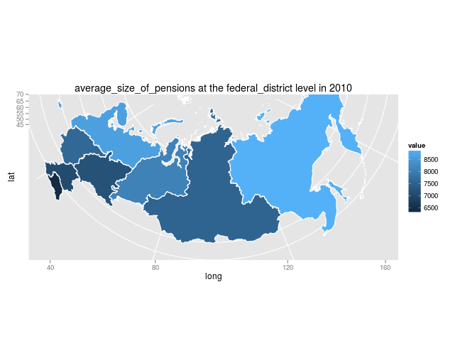
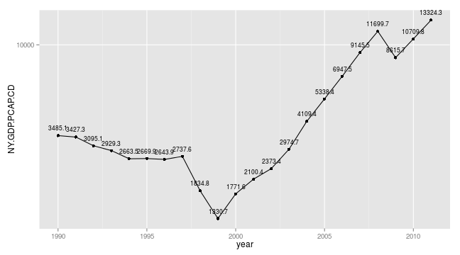

toolbox for R language for open welfare data from Russian Federation
This site has examples on how to use rustfare-package and up-to-date package-documentation, same as delivered with the package itself. Click here for rustfare on Github.
library(devtools)
install_github(repo = "rustfare", username = "rOpenGov")
library(rustfare)
Function IndicatorRosstat() returns a dataset with available indicators and metadata in Russian and English
ind <- IndicatorRosstat()
ind[1:3,1:3]
Rosstat regional statistic includes values of the indicators on three levels:
To dowload the data you may use GetRosstat()-function that requires two arguments,
indicator (from the listing above), level (federal/federal_district/region)The code below returns a dataset at federal district level on infant mortality and plots a line graph over time.
library(rustfare) # load rustfare for obtaining the data
library(ggplot2) # load ggplot2 for plotting
dat <- GetRosstat("infant_mortality_rate",
"federal_district")
## Warning: attributes are not identical across measure variables; they will
## be dropped
head(dat, 3) # print the first 6 rows of data.frame
## id_name region year value
## 1 дальневокруг Дальневосточный\r\nфедеральный округ 1995 20.5
## 2 дальневокруг Дальневосточный\r\nфедеральный округ 2001 18.1
## 3 дальневокруг Дальневосточный\r\nфедеральный округ 2000 18.6
## region_ru region_en
## 1 Дальневосточный федеральный округ Far Eastern Federal District
## 2 Дальневосточный федеральный округ Far Eastern Federal District
## 3 Дальневосточный федеральный округ Far Eastern Federal District
## level id_shape indicator
## 1 federal_district 4 infant_mortality_rate
## 2 federal_district 4 infant_mortality_rate
## 3 federal_district 4 infant_mortality_rate
ggplot(dat, aes(x=year,y=value,color=region_en)) +
geom_point() +
geom_line() +
geom_text(data = subset(dat, year == 2010),
aes(x=year,y=value,
color=region_en,label=region_en),
size=3, hjust=1) +
theme(legend.position="none")

rustfare has functions for downloading a spatial shapefile from Global Administrative Areas (GADM) database that can be further used to for example plot the data from Rosstat regional data.
Function GetRusGADM() downloads the shapefile at desired level. Level argument accepts four values:
federal: whole countryfederal_districts: Federal districts (8)region: administrative boundaries at the level of federal regions/oblasts (82)rayon: administrative boundaries at the level of rayons/kraisshapefile <- GetRusGADM(level)
library(rustfare)
shapefile <- GetRusGADM("federal")
plot(shapefile)
## Error: cannot coerce type 'S4' to vector of type 'double'
library(rustfare)
shapefile <- GetRusGADM("federal_district")
plot(shapefile)
library(rustfare)
shapefile <- GetRusGADM("region")
plot(shapefile)
library(rustfare)
shapefile <- GetRusGADM("rayon")
plot(shapefile)
library(rustfare)
dat <- GetRosstat("average_size_of_pensions",
"federal_district")
## Warning: attributes are not identical across measure variables; they will
## be dropped
dat10 <- subset(dat, year == 2010)
shape <- GetRusGADM("federal_district")
library(maptools)
row.names(dat10) <- dat10$id_shape
row.names(shape) <- as.character(shape$ID_1)
dat10 <- dat10[order(row.names(dat10)),]
shape <- shape[order(row.names(shape)),]
df <- spCbind(shape, dat10)
library(sp)
spplot(df, "value", col.regions=grey.colors(20, 0.9, 0.3))

There is a RosstatMapPlot-function in rustfare that takes measure, year and level as arguments.
library(rustfare)
RosstatMapPlot("infant_mortality_rate",2010,"region")

library(rustfare)
RosstatMapPlot("average_size_of_pensions",2010,"federal_district")

As Russia is not a member of OECD there is only limited data available in here: Country statistical profile: Russian Federation. rustfaRe has function to download indicators from that dataset.
Function IndicatorOecd() returns a data.frame with all the indicators listed.
library(rustfaRe)
head(IndicatorOecd())
for plotting employment rates of different age classes you can try the following example:
library(rustfaRe)
library(ggplot2)
dat14_24 <- GetOecd("employment_rate_in_population_aged_15-24")
dat25_54 <- GetOecd("employment_rate_in_population_aged_25-54")
dat55_64 <- GetOecd("employment_rate_in_population_aged_55-64")
dat <- rbind(dat14_24,dat25_54,dat55_64)
ggplot(dat, aes(x=year,y=value,
color=indicator,group=indicator)) +
geom_point() +
geom_line() +
geom_text(data = subset(dat, year == 2009),
aes(x=year,y=value,
color=indicator,label=indicator),
size=3) +
theme(legend.position="none")
As for World Bank Development Indicators rustfare relies on WDI-package for which you can find examples here github.com/vincentarelbundock/WDI.
With the following code you can plot GDP per capita (current US$) using log-scale from 1990 to 2011.
library(WDI)
library(ggplot2)
# Search for GDP
head(WDIsearch('gdp'))
## indicator
## [1,] "BG.GSR.NFSV.GD.ZS"
## [2,] "BM.KLT.DINV.GD.ZS"
## [3,] "BN.CAB.XOKA.GD.ZS"
## [4,] "BN.CUR.GDPM.ZS"
## [5,] "BN.GSR.FCTY.CD.ZS"
## [6,] "BN.KLT.DINV.CD.ZS"
## name
## [1,] "Trade in services (% of GDP)"
## [2,] "Foreign direct investment, net outflows (% of GDP)"
## [3,] "Current account balance (% of GDP)"
## [4,] "Current account balance excluding net official capital grants (% of GDP)"
## [5,] "Net income (% of GDP)"
## [6,] "Foreign direct investment (% of GDP)"
# code for it NY.GDP.PCAP.CD
# dowload the data from 1990 to 2011
dat <- WDI(indicator='NY.GDP.PCAP.CD', # indicator
country='RU', # country/countries
start=1990, end=2011) # time frame
dat$NY.GDP.PCAP.CD <- round(dat$NY.GDP.PCAP.CD, 1) # round the value to single decimal
ggplot(dat, aes(x=year,y=NY.GDP.PCAP.CD,
group=country,label=NY.GDP.PCAP.CD)) +
geom_point() + geom_line() +
geom_text(vjust=-1, size=3) +
scale_y_log10()

The QoG Institute was founded in 2004 by Professor Bo Rothstein and Professor Sören Holmberg. It is an independent research institute within the Department of Political Science at the University of Gothenburg. We conduct and promote research on the causes, consequences and nature of Good Governance and the Quality of Government (QoG) - that is, trustworthy, reliable, impartial, uncorrupted and competent government institutions.
The main objective of our research is to address the theoretical and empirical problem of how political institutions of high quality can be created and maintained. A second objective is to study the effects of Quality of Government on a number of policy areas, such as health, the environment, social policy, and poverty. We approach these problems from a variety of different theoretical and methodological angles.
rustfare utilises the QoG Standard Data. Site with more information and code books: QoG Standard Data
Below is an example on how to extract data on human development index and Democracy (Freedom House/Polity) index.
library(rustfare)
dat <- GetQog(country = c("Russia","China"), # country,countries
indicator=c("undp_hdi","fh_polity2")) # indicator(s)
library(ggplot2)
ggplot(dat, aes(x=year,y=value,color=cname)) +
geom_point() + geom_line() +
geom_text(data = subset(dat, year == 2003),
aes(x=year,y=value,color=cname,label=cname)) +
facet_wrap(~indicator, scales="free") +
theme(legend.position="none")